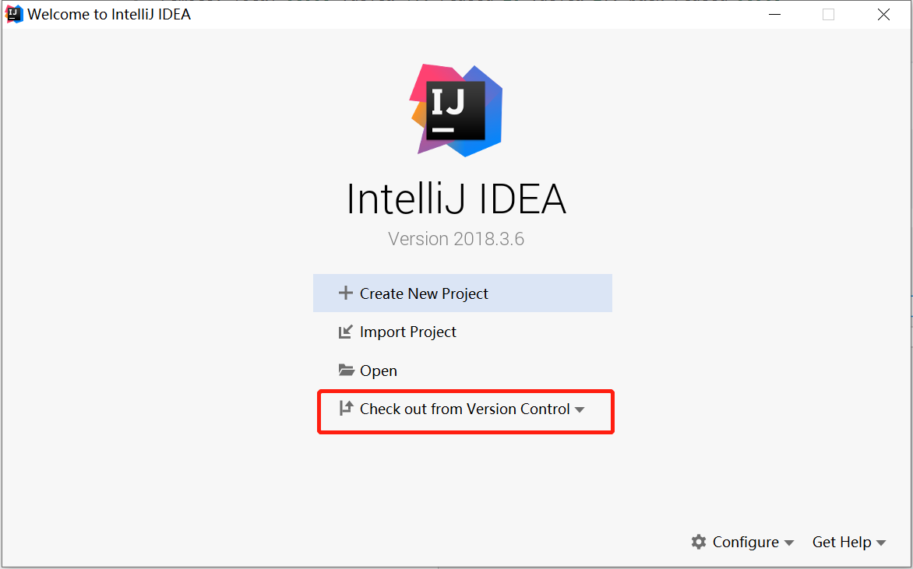
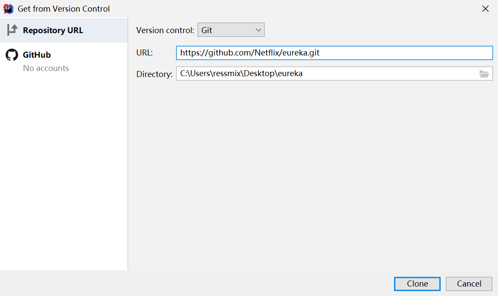
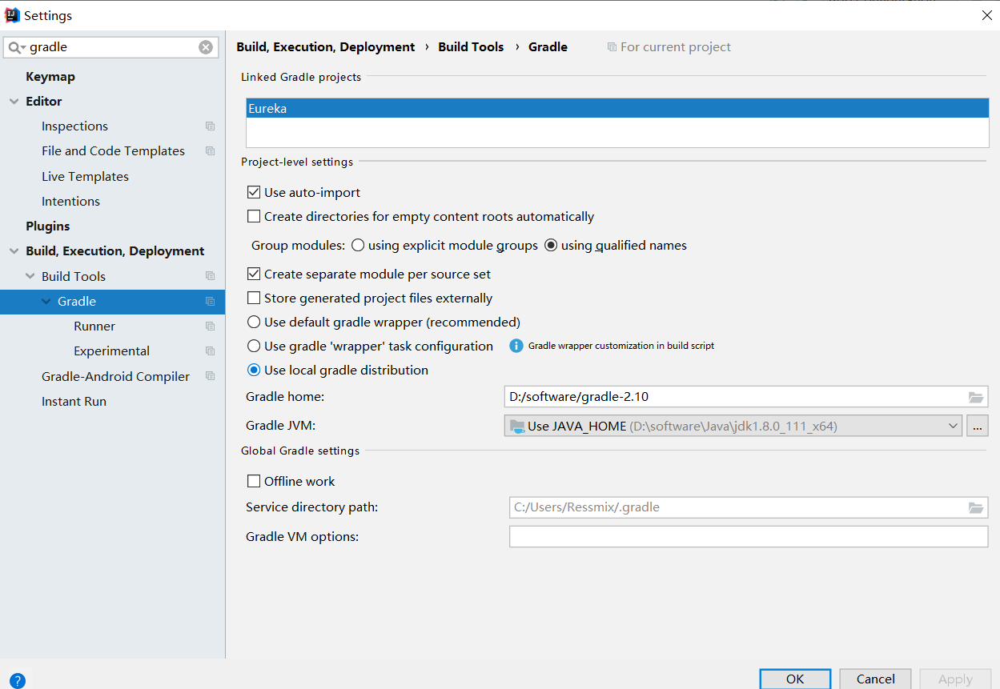
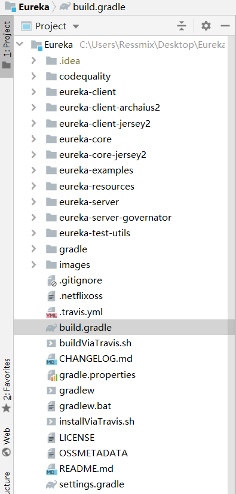

本章，我将在本地搭建Eureka源码环境。这一章，是后续所有Eureka源码解读章节的基础，由于Netflix Eureka是采用Gradle构建的，源码构建环节中会有许多坑，所以读者需要跟随我的步骤，一步步完成Eureka源码的本地构建。
Netflix Eureka项目是用Gradle来构建的，所以先从官网下载Gradle：https://gradle.org/releases/ 。我这里下载的是gradle-2.10。
接着，设置GRADLE_HOME环境变量，同时在PATH环境变量中，加入%GRADLE_HOME%/bin。最后，在cmd命令行中，直接gradle -v，看到gradle版本信息就代表装好了：
$ gradle -v
------------------------------------------------------------
Gradle 2.10
------------------------------------------------------------
Build time: 2015-12-21 21:15:04 UTC
Build number: none
Revision: 276bdcded730f53aa8c11b479986aafa58e124a6
Groovy: 2.4.4
Ant: Apache Ant(TM) version 1.9.3 compiled on December 23 2013
JVM: 1.8.0_111 (Oracle Corporation 25.111-b14)
OS: Windows 10 10.0 amd64
如果要像Maven一样在setting.xml中设置本地仓库的位置，可以再加一个环境变量的参数GRADLE_USER_HOME，值设为自己创建的一个gradle仓库的路径，默认是C:\[Users_HOME]\.gradle。
接着，配置下中央仓库，我这里使用阿里云的maven仓库。在C:\[Users_HOME]\.gradle目录下新建一个名为init.gradle的文件：
allprojects{
repositories {
def REPOSITORY_URL = 'http://maven.aliyun.com/nexus/content/groups/public/'
all { ArtifactRepository repo ->
if(repo instanceof MavenArtifactRepository){
def url = repo.url.toString()
if (url.startsWith('https://repo1.maven.org/maven2') || url.startsWith('https://jcenter.bintray.com/')) {
remove repo
}
}
}
maven {
url REPOSITORY_URL
}
}
}
安装完gradle，就可以通过git clone https://github.com/Netflix/eureka.git命令获取Eureka源码了。
$ git clone https://github.com/Netflix/eureka.git
Cloning into 'eureka'...
remote: Enumerating objects: 25, done.
remote: Counting objects: 100% (25/25), done.
remote: Compressing objects: 100% (20/20), done.
remote: Total 53593 (delta 4), reused 10 (delta 1), pack-reused 53568
Receiving objects: 100% (53593/53593), 11.66 MiB | 987.00 KiB/s, done.
Resolving deltas: 100% (21038/21038), done.
我这里直接通过Intellij IDEA从Git导入源码：



接着，进入Eureka的根目录，选择你要读的那个版本的源码，比如我这里是执行git checkout v1.7.2，转到1.7.2版本的源码，后续章节的源码分析都是基于这个版本。
然后，执行gradlew.bat脚本（我本地是windows），这个脚本会下载Eureka需要的所有依赖，这个过程巨慢无比，耐心等待吧，执行成功后会看到以下信息：
Welcome to Gradle 2.10.
To run a build, run gradlew <task> ...
To see a list of available tasks, run gradlew tasks
To see a list of command-line options, run gradlew --help
To see more detail about a task, run gradlew help --task <task>
BUILD SUCCESSFUL
Total time: 16 mins 47.672 secs
最后，在Eureka根目录执行以下命令，完成项目的构建：
gradle clean build
没有安装Git的童鞋请自行下载安装，我这里就不赘述了。
Netflix Eureka项目的整体结构如下，本节我会对我们阅读源码需要关注的核心模块进行介绍，其它模块略过即可：

eureka-client，代表Eureka客户端（Eureka-Client），需要将自己注册到Eureka Server，或从Eureka Server获取服务注册表，同时进行心跳（续租）通信。
eureka-core，代表Eureka服务端（Eureka-Server），即注册中心，它接收Eureka-Client的服务注册请求，提供服务发现的功能，保持心跳（续约请求），摘除故障服务实例等等。
eureka-server的本质是一个web应用，它依赖eureka-client、eureka-core、eureka-resources，相当于把它们一起打成一个war包。所以eureka-server既扮演着注册中心角色，也扮演着客户端的角色。
Eureka依赖的一些静态资源，JSP资源都在这个包下。
包含了大量Eureka的使用示例，后续我们研究Eureka源码时，会运行这些实例观察整个系统的运行过程。
包含Eureka的各种单元测试工具类。
注：上述包含Jersey的模块，其实是对Jersey这个开源的RESTful框架进行了封装。读者可以把Jersey类比成Spring MVC。Eureka-Client和Eureka-Server之间的通信，都是基于Jersey框架来实现的（http restful接口请求和调用）。所以，eureka-client-jersey2/eureka-core-jersey2，就是Eureka为了方便自己使用，对Jersey框架的一个封装，提供更多的功能。
本章，我带领大家在本地搭建起了Eureka源码环境。下一章，我将分析Eureka Server启动的整体流程，因为Eureka-Server同时扮演了Eureka-Client的角色，所以通过整个Eureka Server的启动流程，可以让读者从全局上对Eureka的各个核心概念有一个了解。